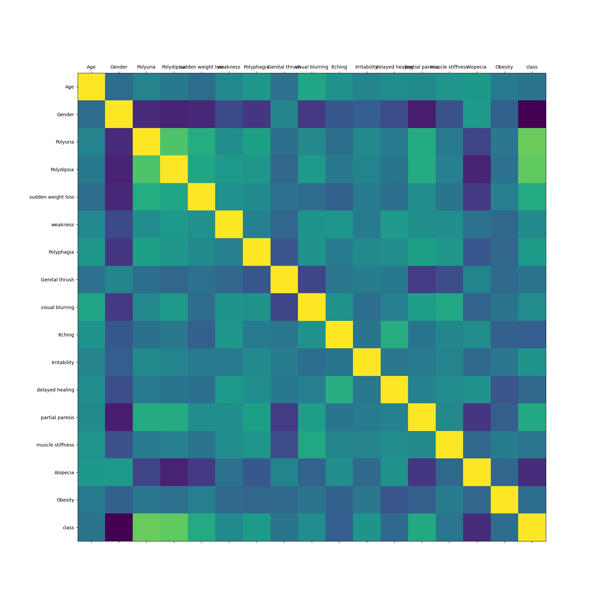

Este site foi desenvolvido Por Ademir, Angélica, ... Para analisar a base de dados disponível em: https://xxx.com para verificar a chances que um pacientes que possui certas características possa aquirir uma diabete

A figura irá exibir a correlação entre os atributos, \nquanto mais escuro a cor, maior será a relação entre esses atributos.
